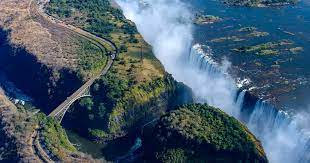

Exploring Natural Wonders
Discover the awe-inspiring beauty of natural landscapes across the globe, from the Victiria fallsin zimbabwe to the captivating Aurora borealisvisible in various countries
Natural Wonders
- Victoria Falls, zimbabwe
- Grand Canyin, USA
- Aurora borealis, Various Countries
- Mount Everest, Nepal
- Great barrier Reef, Australia
"Nature always wears the colors of the spirit," -Ralph waldo Emerson
Benefits of Experiencing Natural Beauty
- Fostering a sense of wonder
- Deepening appreciation for the planet
- Creating lasting memories
Discover More

The Majestic Victoria Falls
Explore more natural wonders.